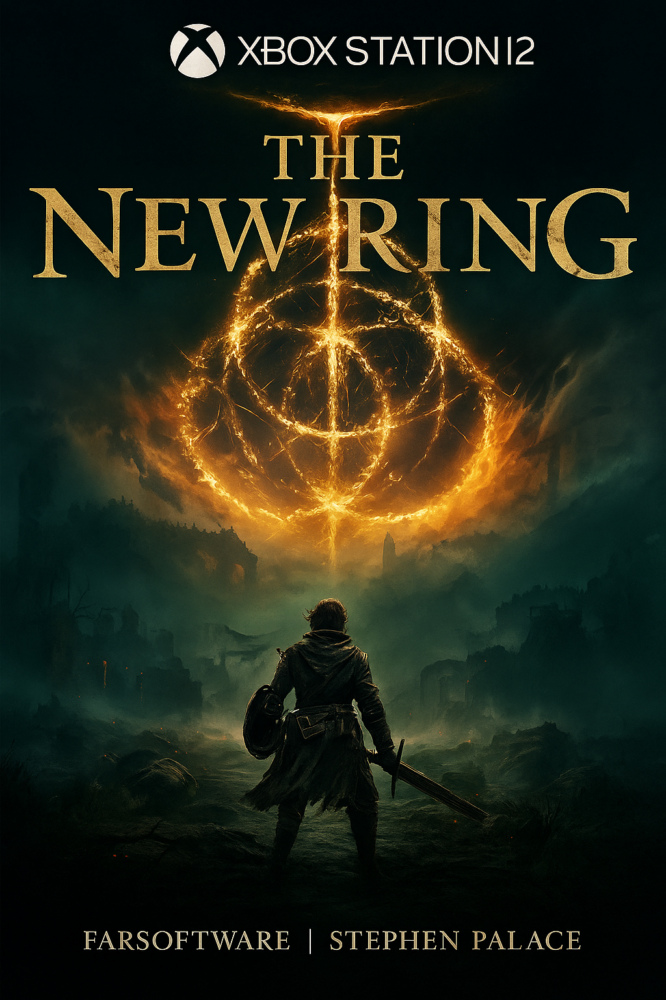

Novelista y Creador de Mundos
Soy Stephen Palace, escritor de ficción apasionado por los mundos intensos, los personajes inolvidables y las emociones crudas. He trabajado tanto en literatura como en medios interactivos, incluyendo la aclamada colaboración con FarSoftware para el juego The New Ring.
#feminismo #JapaneseLivesMatter #librosenpapel #gatosyperros #DonemosALosPanameños #BurnCorpoShit
¡Buenas, #Palacers! Tranquilos todos, últimamente ha habido mucho revuelo pero estoy aquí. La publicación de Sangre Fría, Calles Calientes© ha sido todo un éxito alcanzando las 20 copias vendidas en estos últimos meses.
¡Mil gracias a todos!
La razón de mi poca actividad últimamente ha sido simplemente que he tenido unos problemillas por #NightCitySucks, pero estoy bien y la máquina StephenPalaceBooks continúa.
¡Solo que ahora en Panamá!
#DonemosALosPanameños #PerdonVitor #trans #VacasTambienSonMascotas #SamuraiChicos, sé que soy muy amado por los #Palacers, pero por favor, durante la escritura de Sangre Fría, Calles Calientes© he sido abordado y acosado numerosas veces por gente, incluso cuando estaba tranquilamente en un club con mis numerosos amigos. Aprecio vuestro apoyo y amor, pero desde lejos.
#fiestero #espaciopersonal #DonemosALosPanameños
La Víbora: El comienzo de una pasión venenosa.
Veneno Inyectado: Cuando el deseo arde más que el dolor.
Antídoto: Redención o condena: el cierre de la trilogía.
Desde aquellos tiempos: Una inmersión en la Francia del siglo XI.
Red Danger, Red Ranger: Un western rojo de violencia y justicia.
La semilla de Fabian: Terror psicológico desde la raíz de la locura.
El Cometa: Serie de cómics ilustrada por Jorge Giménez, publicada por Image Comics.
Sangre Fría, Calles Calientes: Mi mejor obra hasta la fecha. Una trama convulsa, personajes complejos, sexo, violencia y cromo. Mucho cromo.
Fui consultor, escritor y diseñador de mundos para FarSoftware en el aclamado videojuego The New Ring, reconocido por su narrativa profunda y universo envolvente.
???: Próximamente... #RoadToKingmaker